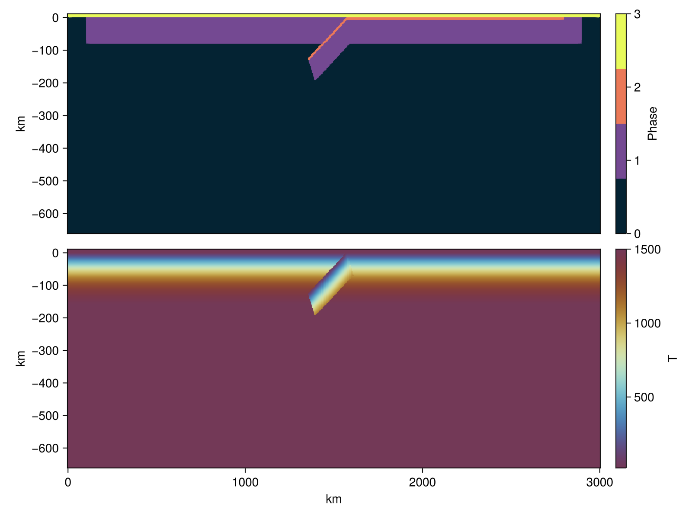

Model setup
As described in the original paper, the domain consists of a Cartesian box of $\Omega \in [0, 3000] \times [0, -660]$ km, with two 80 km thick oceanic plates over the asthenospheric mantle.
We will use GeophysicalModelGenerator.jl to generate the initial geometry, material phases, and thermal field of our models. We will start by defining the dimensions and resolution of our model, as well as initializing the Grid2D object and two arrays Phases and Temp that host the material phase (given by an integer) and the thermal field, respectively.
nx, nz = 512, 218 # number of cells per dimension
Tbot = 1474.0 # [Celsius]
model_depth = 660 # [km]
air_thickness = 10 # [km]
Lx = 3000 # model length [km]
x = range(0, Lx, nx);
z = range(-model_depth, air_thickness, nz);
Grid2D = CartData(xyz_grid(x,0,z))
Phases = zeros(Int64, nx, 1, nz);
Temp = fill(Tbot, nx, 1, nz);In this model we have four material phases with their respective phase numbers:
| Material | Phase number |
|---|---|
| asthenosphere | 0 |
| oceanic lithosphere | 1 |
| oceanic crust | 3 |
| sticky air | 4 |
We will start by initializing the model as asthenospheric mantle, with a thermal profile given by the half-space cooling model with an age of 80 Myrs.
add_box!(
Phases,
Temp,
Grid2D;
xlim = (0, Lx),
zlim = (-model_depth, 0.0),
phase = LithosphericPhases(Layers=[], Phases=[0]),
T = HalfspaceCoolingTemp(Tsurface=20, Tmantle=Tbot, Age=80,Adiabat=0.4)
)
Next we add a horizontal 80 km thick oceanic lithosphere. Note that we leave a 100 km buffer zone next to the vertical boundaries of the domain, to facilitate the sliding of the oceanic plates.
add_box!(
Phases,
Temp,
Grid2D;
xlim = (100, Lx-100), # 100 km buffer zones on both sides
zlim = (-model_depth, 0.0),
phase = LithosphericPhases(Layers=[80], Phases=[1 0]),
T = HalfspaceCoolingTemp(Tsurface=20, Tmantle=Tbot, Age=80, Adiabat=0.4)
)
As in the original paper, we add a 8km thick crust on top of the subducting oceanic plate.
# Add right oceanic plate crust
add_box!(
Phases,
Temp,
Grid2D;
xlim = (Lx-1430, Lx-200),
zlim = (-model_depth, 0.0),
Origin = nothing, StrikeAngle=0, DipAngle=0,
phase = LithosphericPhases(Layers=[8 72], Phases=[2 1 0]),
T = HalfspaceCoolingTemp(Tsurface=20, Tmantle=Tbot, Age=80, Adiabat=0.4)
)And finally we add the subducting slab, with the trench located at 1430km from the right-hand-side boundary.
add_box!(
Phases,
Temp,
Grid2D;
xlim = (Lx-1430, Lx-1430-250),
zlim = (-80, 0.0),
Origin = nothing, StrikeAngle=0, DipAngle=-30,
phase = LithosphericPhases(Layers=[8 72], Phases=[2 1 0]),
T = HalfspaceCoolingTemp(Tsurface=20, Tmantle=Tbot, Age=80, Adiabat=0.4)
)
surf = Grid2D.z.val .> 0.0
@views Temp[surf] .= 20.0
@views Phases[surf] .= 3
li = (abs(last(x)-first(x)), abs(last(z)-first(z))) .* 1e3 # in meters
origin = (x[1], z[1]) .* 1e3 # lower-left corner of the domain
Phases = Phases[:,1,:] .+ 1 # +1 because Julia is 1-indexed
Temp = Temp[:,1,:].+273 # in Kelvin